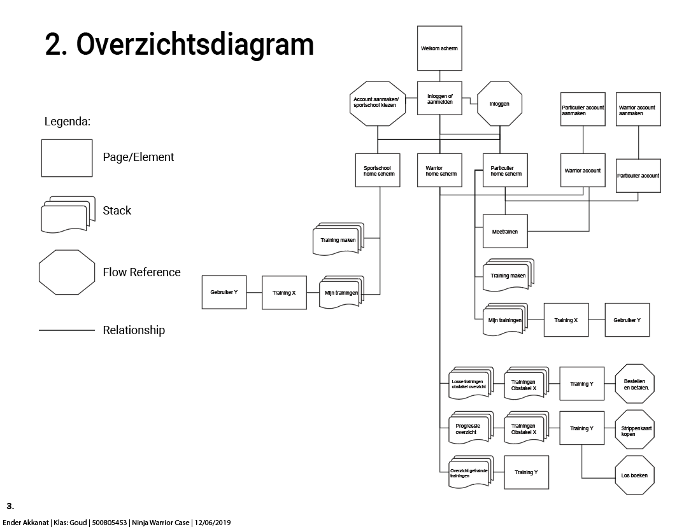
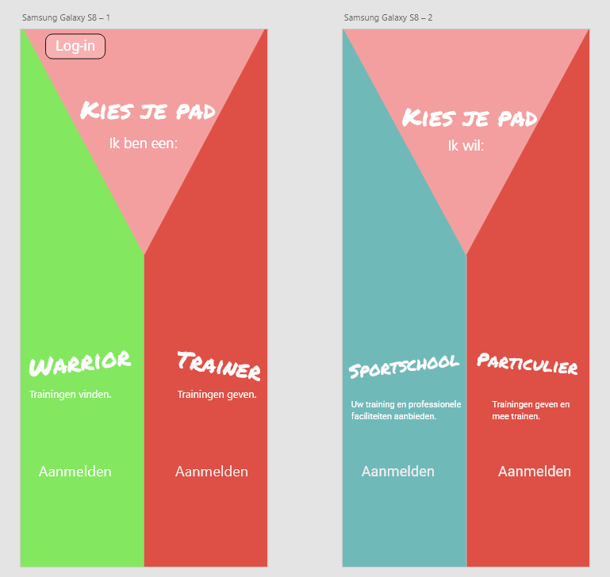
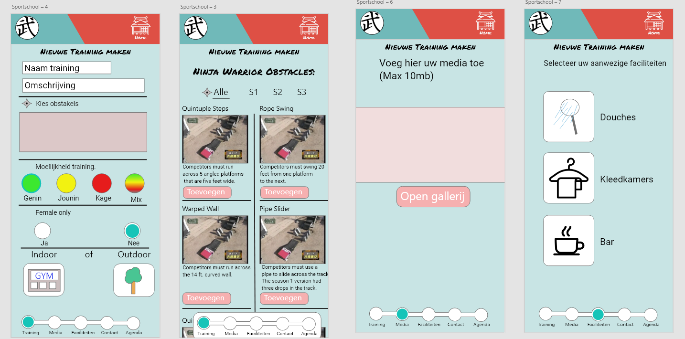
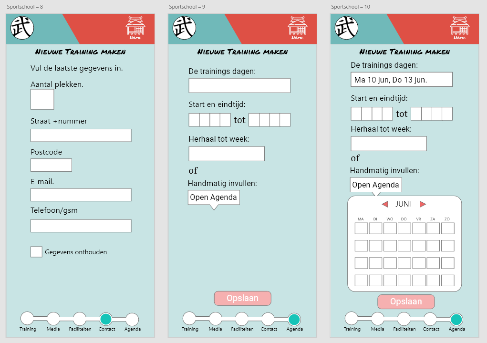
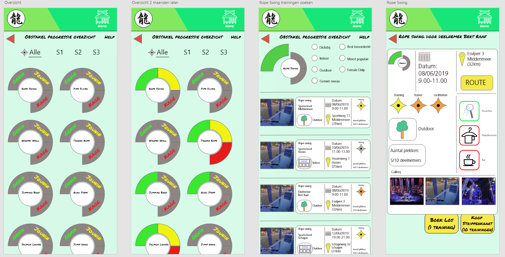

Opdracht: Voor Informatie Architectuur moest ik voor een opdrachtgever een applicatie ontwerpen met schermen en interacties. De opdrachtgever was The Ninja Warrior Run organisatie. Ik kreeg een case met de punten die verwerkt moesten worden in de applicatie.
Resultaat: De applicatie moest werken voor drie verschillende groepen:
Een overzicht diagram maken.
Op het homescherm kunnen twee "paden" gekozen worden. Het warrior pad is voor mensen die willen trainen voor de Ninja Warrior Run. Het trainer pad is voor mensen die trainingen willen geven over de obstakels van de Ninja Warrior Run. Hier kan er nog gekozen worden of het een particuliere training is of een training door een proffesionele sportschool.
De trainer kan alle gegevens invullen zoals welke obstakels hij of zij les in gaat geven, de moeilijkheid, of het binnen of buiten is, faciliteiten en eventuele media en tot slotte de data.
 De gene die willen trainen voor een obstakel kunnen zich opgeven voor trainingen. Ze kunnen ook hun progressie bijhouden doormiddel van de drie verschillende moeilijkheid. niveaus
 Terug